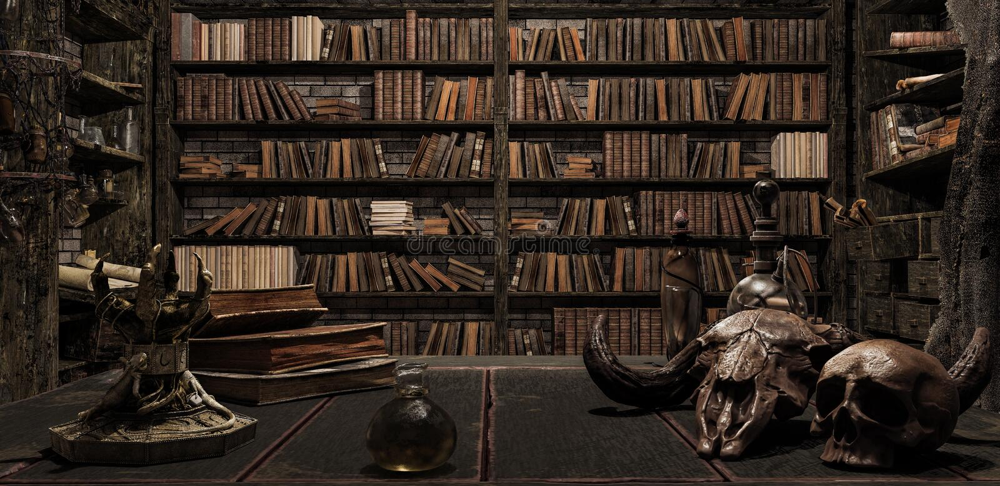

Você já ouviu falar da cidade de woodland? ou o seu esquecido nome? a Cidade Das Almas? bom se nunca ouviu eu irei lhe apresentar mas venha ver pelo seu próprio risco!
Woodland uma cidade antiga e decrepita, esquecida pelo tempo e o grande criador, é uma cidade fantasma a muito tempo abandonada... o porque? Eu não me lembro! faz anos que alguém não vem aqui.
De dia você não vai encontrar muita coisa, talvez um vulto, um cantarolar ou até mesmo algo que não quis dormir, mas é a noite que você deve temer, aonde de dia estam dormindo e de noite... acho melhor você não descobrir.
Venha, não acho que é uma boa você olhar essa cidade, não ainda, você já ouviu falar da Antiga Biblioteca de Woodland? Não?! que pena talvez seja por isso que poucos me visitam, bom venha que irei lhe apresentar a minha casa... porque casa? Pois é o único lugar em que eles não entram, o por que eles não entram? acho melhor você mesmo descobrir! Pegue um livro e se sente numa cadeira qualaquer há muito de se entender nesse velho lugar
Todo dia no mesmo lugar eu me via, a lua atrás da silhuesta de um homem alto, esguio, parece usar um terno barato e um chápeu com uma pena do lado, parecia descalço mas não conseguia ver direito, ele sempre segurava uma maleta em uma mão e uma carta envolta de algo que parece uma corda de primeira vista mas ao refletir na lua se revela um colar de prata, eu me pergunto "esse colar é mesmo de prata ou a luz da lua me faz ver dessa forma?" ele olha pra mim, com aqueles olhos vermelho sangue, que me julgam até a alma, de passo em passo sem compasso ele vem até mim, sem vacilar o seu olhar no meu, estende sua mão esquerda com a carta, como se fosse um convite, eu tento pegar ela e acordo...